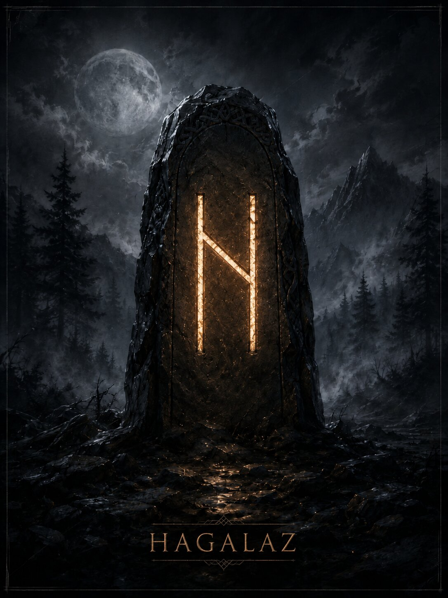

Руна внезапного внешнего кризиса и разрушения привычной формы. Её сила редко удобна, но часто освобождает пространство для перестройки.
Краткая суть
Руна внезапного внешнего кризиса и разрушения привычной формы. Её сила редко удобна, но часто освобождает пространство для перестройки.
Историческая традиция
Название связано с градом; рунические поэмы описывают его как холодное небесное зерно, которое тает и возвращается в воду. Современная мантика переносит этот природный образ на неожиданные кризисы, форс-мажор и разрушение старых структур.
- Ключевые значения: град, кризис, разрушение, форс-мажор, освобождение, перестройка, стихийность, разрыв
Современная мантика
Мантические значения относятся к современной рунической практике.
- Положительное проявление: Кризис ломает неработающую конструкцию и открывает возможность перестроить её честнее.
- Негативное проявление: Потери из-за обстоятельств, хаос, резкий конфликт, неконтролируемая перемена.
- Совет: Сначала пережди пик воздействия, затем оцени, что действительно стоит восстанавливать.
- Предупреждение: Не пытайся контролировать всё во время «града»; часть изменений не зависит от твоей воли.
- Итог ситуации: Старая форма будет нарушена; итог зависит от того, что человек построит после кризиса.
Психологическое состояние
Ощущение потери контроля; конструктивная задача — не отрицать кризис и не превращать его в постоянную идентичность.
Духовное значение
Принятие того, что изменение иногда приходит извне и разрушает ложную устойчивость.
Прямое и перевёрнутое положение
Мантическая трактовка и работа с перевёрнутыми положениями относятся к современной рунической практике. Для Старшего Футарка не сохранилось древнего руководства, которое задавало бы такой способ гадания как единственно правильный. Hagalaz обычно не имеет отдельного перевёрнутого значения: форма руны симметрична, а негатив или конструктивность читаются по позиции и окружению.
Отличия трактовок разных школ
Исторический образ града хорошо подтверждён, но идея целенаправленной «руны порчи/чистки» принадлежит современной эзотерике.
Итог
Руна внезапного внешнего кризиса и разрушения привычной формы. Её сила редко удобна, но часто освобождает пространство для перестройки.
Финансы
неожиданные расходы, срыв сделки, форс-мажор; иногда необходимость списать неработающий актив.
Работа
внезапная реорганизация, отмена проекта, конфликт с системой, слом привычного процесса.
Отношения
острый кризис, резкий разрыв сценария, событие, после которого прежний формат отношений уже не сохраняется.
Семья и быт
поломки, внезапные перемены планов, необходимость быстро адаптироваться.
Руна как характеристика человека
Человек в состоянии кризиса или тот, кто сам является фактором резких перемен.
- Мысли: понимает, что старую схему уже не удержать.
- Чувства: напряжение, шок, освобождение после накопившегося давления.
- Действия: ломает, прекращает, резко меняет план или реагирует на форс-мажор.
Современное магическое значение
Это современная эзотерическая практика, а не исторически подтверждённая традиция.
- Современная магическая трактовка: разрушение препятствий и старых связей, резкая чистка пространства.
- Задачи: слом устойчивого блока, прекращение затянувшегося сценария, радикальная перестройка.
- Усиливает: нестабильность и скорость разрушения старой формы.
- Ослабляет: жёсткие структуры и фиксацию.
- Риск: трудно ограничить последствия только одной выбранной областью.
Руна в формулах и ставах
Hagalaz чаще используют как разрушитель, а не как мягкий корректор: Hagalaz+Isa — разрушение с последующей остановкой; Hagalaz+Jera — кризис, запускающий новый цикл; Hagalaz+Thurisaz — очень жёсткое отсечение.
Эзотерическая трактовка
В современной эзотерической трактовке
В современных диагностических системах Hagalaz часто считают маркером сильного разрушительного воздействия или серьёзного внешнего давления.
Возможное бытовое объяснение
Альтернативное объяснение
Бытовая альтернатива: реальный форс-мажор, конфликт, экономический кризис, аварийная ситуация, цепочка случайных неудач. Одна руна не устанавливает источник происходящего.
Характерные сочетания
- Hagalaz + Isa: кризис и остановка.
- Hagalaz + Jera: перестройка с долгим последующим циклом.
- Hagalaz + Wunjo: разрушение прежнего комфорта; иногда облегчение после кризиса.
Руна в формулах и ставах
Hagalaz чаще используют как разрушитель, а не как мягкий корректор: Hagalaz+Isa — разрушение с последующей остановкой; Hagalaz+Jera — кризис, запускающий новый цикл; Hagalaz+Thurisaz — очень жёсткое отсечение.
Мантические, магические и диагностические значения относятся к современной рунической практике. Историческая часть опирается на рунические поэмы и эпиграфику. Материалы носят справочный и развлекательный характер.